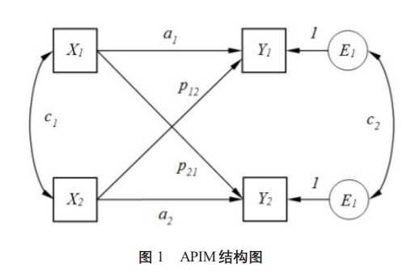
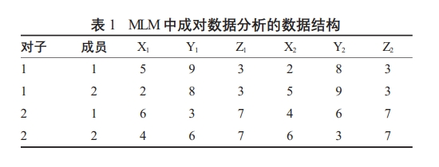
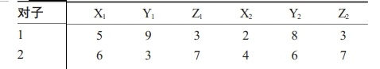
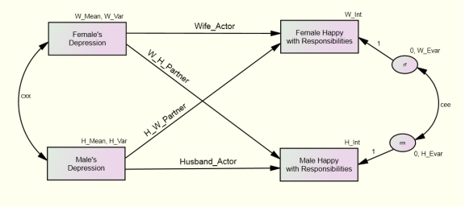
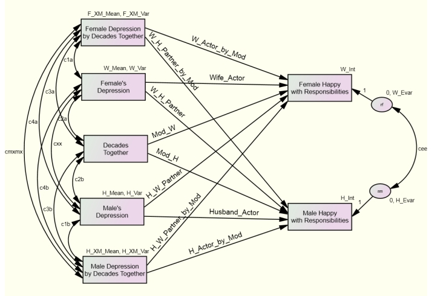

主客体互依模型（Actor-Partner Interdependence Model, APIM）是一种广泛应用于分析组互动数据的统计方法。
APIM允许研究者探索关系中双方如何互相影响，特别是当一个个体的行为、态度或特征不仅影响到自己，还可能影响到其客体时。
该模型的核心在于区分两种效应：主体效应和客体效应。主体效应指的是一个人自身的某个变量对其自身的结果变量的影响；而客体效应则指一个人客体的某个变量对该人结果变量的影响。
本篇教程主要是介绍APIM模型和APIMoM(带有调节变量的主客体互依模型)， 以及如何使用常用的统计软件来实现。
近年来，随着对人际间相互依赖的研究兴趣增加，APIM的应用范围也在不断扩大。它不仅可以用于理解浪漫客体之间的互动模式，还可以扩展至家庭成员、朋友甚至是工作伙伴之间的关系。文献指出，在基本的APIM框架之上，通过引入调节变量可以进一步探讨不同条件下这些效应的变化情况。潜在的调节变量可能包括在组内变化的因素、组间变化的因素或者同时在这两个层面上变化的因素（即混合型调节变量）。此外，还需考虑组的类型，比如是否可区分（如异性夫妻）还是不可区分（如同性朋友），因为这将影响模型的具体设定。
APIM 主客体互依模型
其实我们已经再这篇文章《APIM主客体相依模型成对数据分析以及mplus应用》中介绍了APIM的原理和mplus方法。 所以我们会简化这一部分内容, 有需要的请去参考这篇文章。
主客体互依模型 APIM 的两种建模方法
在主体-客体相互依存模型（APIM）中，如图1所示，我们可以用X1和X2分别代表丈夫和妻子的自我积极性，而Y1和Y2则分别代表丈夫和妻子的婚姻满意度。在这种情况下：
主体效应（Actor Effects）指的是个体自身的变量对其自身结果变量的影响。具体来说，这包括：
- X1（丈夫的自我积极性）对Y1（丈夫的婚姻满意度）的影响，用系数a1表示；
- X2（妻子的自我积极性）对Y2（妻子的婚姻满意度）的影响，用系数a2表示。
客体效应（Partner Effects）指的是一个个体的客体的变量对该个体的结果变量的影响。具体来说，这包括：
- X1（丈夫的自我积极性）对Y2（妻子的婚姻满意度）的影响，用系数p1表示；
- X2（妻子的自我积极性）对Y1（丈夫的婚姻满意度）的影响，用系数p2表示。
通过这种设定，APIM允许我们探索在一个组关系中，每个人的行为如何不仅影响自己，也影响其客体。这样的分析有助于揭示夫妻间相互作用的动态，并理解他们之间的互动模式。
统计上有两种方法可以构建这个模型： 多层线性模型（MLM）和结构方程模型（SEM）。
多层线性模型（MLM）
对于多层线性模型（MLM），需要创建一个成对数据集，并为组中的每位成员估计一个单一的方程，其中自变量包括自身的X和客体的X作为预测因子。非独立性可以通过在配对组层面设置随机截距或误差的相关性来建模。使用MLM时，会创建一个成对数据集(见上表)。该数据集包含了结果变量（Y）、主题变量（X）以及客体变量（X′）。对于组j中的个体i，模型可以表示为：
$ Y_{ij} = \beta_{0j} + \beta_{1}X_{ij} + \beta_{2}X'_{ij} + e_{ij} $
其中：
$ Y_{ij} $是组j中个体i的结果变量。$ \beta_{0j} $是组j的随机截距，它捕捉了不同组间未被解释的变异。$ \beta_{1} $是主体效应系数，表示个体i自身变量$ X_{ij} $对其结果的影响。$ \beta_{2} $是客体效应系数，表示个体i客体的变量$ X'_{ij} $对个体i结果的影响。$ e_{ij} $是残差项，代表模型未能解释的部分。
通过这种方式，MLM能够有效地处理组间的数据依赖性，并同时评估每个个体及其客体特征对结果的影响。
SPSS代码：
1 | MIXED Y_1 WITH X_1 X_2 |
- PARTNUM 数据表中的“成员”
- SUBJECT(DYADID) 数据表中的“对子”
- COVTYPE(CSR) 表示使用独立性相关系数
结构方程模型 AMOS
在使用结构方程建模的时候， 我们的数据形式是不同的，X1和X2是自变量，Y1和Y2是结果变量。角标1表示组内第一个人，比如妻子，角标2表示组内第二人，比如丈夫。
我们可以使用SEM构建如下模型：
$\begin{array}{c}{{Y_{1}=b_{0}+b_{1}X_{1}+b_{2}X_{1}+e_{1}~~~~}}\\ {{{}}}\\ {{{}}}\\ {{Y_{2}=b_{0}+b_{2}X_{1}+b_{1}X_{1}+e_{2}}}\end{array}$
请注意，截距以及主体效应和客体效应在方程之间被约束为相等。
此外，我们还约束了V(e1) = V(e2)（即误差的方差相等）、V(X1) = V(X2)（即自变量的方差相等），
并且X1和X2的均值也被固定为相等。由此产生的模型具有6个自由度，但它被视为饱和模型，并且按照Olsen和Kenny（2006）的说法被称为I-SAT（不可区分且饱和）模型。
我们在AMOS中可以构建如下的模型：
并且， 根据不可区分配对模型的定义， 我们添加如下的限定条件：
- H_Int = W_Int,
- H_Mean = W_Mean,
- H_Var = W_Var,
- H_Evar = W_Evar,
- Husband_Actor = Wife_Actor,
- H_W_Partner = W_H_Partner
结构方程模型 Mplus
如下是不可区分配对模型APIM的mplus代码：
1 | MODEL: |
主客体互依模型的调节效应 APIMoM
调节变量的种类
根据文献中的描述，调节变量在主体-客体相互依存模型（APIM）中可以分为以下几种类型：
组内的变量（Within-dyads variable）：这类变量在同一对关系内部发生变化，但每对关系的平均值相同。例如，在异性夫妻中，性别就是一个典型的组内变量，因为每个家庭都有一个男性和一个女性；再如，在一对夫妇中，每个人分担家务的比例可能不同，这也是一个组内的变量。
组间的变量（Between-dyads variable）：这类变量的变化发生在不同的组之间，而不是组内部。比如，组的关系长度、两人相识的时间长短等，这些特征是整个组单位所共有的，并且在不同的组之间有所不同。
混合型变量（Mixed variable）：这种类型的变量同时在组内和组间发生变化。这意味着既存在个体之间的差异，也存在不同组之间的差异。例如，一个人的社会支持水平可能在一对关系中与客体不同，同时也可能与其他组相比有所差异。
当涉及到可区分的组时（如异性夫妻），还可能引入区分变量（distinguishing variable），这是一种特殊的组内变量，通常是二分变量，用来表示组内部成员的不同角色或特性，比如性别。
那么如何通过结构方程建模（SEM）或多层线性建模（MLM）来估计这些不同类型调节变量。此外，对于复杂的情况，比如当调节变量是混合型并且组是可区分的时候，可能会产生多达8种交互效应，这需要通过特定的统计方法来进行分析。
组间的变量
不可区分配对
多层建模
在使用多层线性模型（MLM）时，模型中包含两个交互项：调节变量与主体变量的交互项以及调节变量与客体变量的交互项，同时还有主体效应、客体效应和调节变量的主效应。模型可以表示为：
$ Y_{ij} = b_0 + b_1X_{ij} + b_2X'_{ij} + b_3M_j + b_4X_{ij}M_j + b_5X'_{ij}M_j + e_{ij} $
$ Y_{ij} $是组j中的个体i的结果变量。$ b_0 $是模型的截距。$ b_1 $是主体效应系数，表示个体i自身变量$ X_{ij} $对其结果的影响。$ b_2 $是客体效应系数，表示个体i客体的变量$ X'_{ij} $对个体i结果的影响。$ b_3 $是调节变量$ M_j $的主效应系数。$ b_4 $和$ b_5 $分别是调节变量与主体效应及客体效应的交互项系数，它们分别表示调节变量$ M_j $如何影响主体效应和客体效应。$ e_{ij} $是残差项，代表模型未能解释的部分。
这些交互项的显著性检验表明，组间的调节变量是否与主体效应（系数$ b_4 $）和客体效应（系数$ b_5 $）有交互作用。
此外，如果调节变量是连续变量，为了提高解释性，研究者可以估计调节变量均值上下一个标准差处的简单主体效应和客体效应。这种方法有助于更直观地理解调节变量在不同水平上对主体效应和客体效应的具体影响。
结构方程建模
当使用结构方程建模（SEM）来估计包含组间调节变量的模型时，需要为组中的每个成员包括上述提到的两个交互项作为测量变量。对于组中的第一个成员，方程可以表示为：
$ Y_1 = b_0 + b_1X_1 + b_2X_2 + b_3M + b_4X_1M + b_5X_2M + e_1 $ (9)
$ Y_1 $是第一个成员的结果变量。$ b_0 $是截距。$ b_1 $是第一个成员自身变量$ X_1 $对其结果的影响系数（主体效应）。$ b_2 $是第二个成员变量$ X_2 $对第一个成员结果的影响系数（客体效应）。$ b_3 $是调节变量$ M $的主效应系数。$ b_4 $和$ b_5 $分别是调节变量与第一个成员自身变量及第二个成员变量的交互项系数。$ e_1 $是残差项。
对于组中的第二个成员，方程可以表示为：
$ Y_2 = b_6 + b_7X_2 + b_8X_1 + b_9M + b_{10}X_2M + b_{11}X_1M + e_2 $ (10)
$ Y_2 $是第二个成员的结果变量。$ b_6 $是截距。$ b_7 $是第二个成员自身变量$ X_2 $对其结果的影响系数（主体效应）。$ b_8 $是第一个成员变量$ X_1 $对第二个成员结果的影响系数（客体效应）。$ b_9 $是调节变量$ M $的主效应系数。$ b_{10} $和$ b_{11} $分别是调节变量与第二个成员自身变量及第一个成员变量的交互项系数。$ e_2 $是残差项。
这些方程中，$ b_4 $、$ b_5 $、$ b_{10} $ 和 $ b_{11} $ 的显著性检验可以用来判断调节变量是否与主体效应和客体效应存在交互作用。通过这种方式，SEM能够同时考虑组内部以及组间的变量，提供一个全面的分析框架。
如果使用amos， 我们可以构建如下模型：
并且增加如下限定：
1 | 1) H_Int = W_Int , 2) H_Mean = W_Mean, 3) H_XM_Mean = |
可区分配对
如果组成员是可区分的，并且存在一个组间的调节变量，那么上述讨论的可区分组模型将扩展以包括四个额外的调节效应。使用性别作为区分变量，在这个模型中，组间的变量可以分别调节女性和男性的主体效应和客体效应，从而产生以下四个调节效应：
- 女性的主体效应由组间变量调节。
- 女性的客体效应由组间变量调节。
- 男性的主体效应由组间变量调节。
- 男性的客体效应由组间变量调节。
在这种情况下，核心问题通常是探究组间调节变量是否对两个组成员的主体效应或客体效应有不同的调节作用。
多层线性建模（MLM）
当使用多层线性建模时，组间变量的调节效应通过与区分变量（如性别）以及主体或客体变量的三个三向交互项来纳入模型。需要注意的是，所有相关的两向交互项和主效应也需要包含在该模型中：
$ Y_{ij} = b_{0j} + b_{1j}X_{ij} + b_{2j}X'_{ij} + b_{3j}G_{ij} + b_{4j}M_{ij} + b_{5j}X_{ij}G_{ij} + b_{6j}X'_{ij}G_{ij} + b_{7j}M_{ij}G_{ij} + b_{8j}X_{ij}M_{ij} + b_{9j}X'_{ij}M_{ij} + b_{10j}X_{ij}G_{ij}M_{ij} + b_{11j}X'_{ij}G_{ij}M_{ij} + e_{ij} $
这些三向交互项的检验表明，组间调节变量是否对不同组成员的主体效应和客体效应有不同的调节作用。为了分别估计每个组成员的主体效应和客体效应如何被组间调节变量所调节，可以使用“双截距”模型。这种模型提供了四个独立的调节效应检验——即调节变量与每种角色的主体和客体变量之间的交互作用。例如，Givertz, Segrin, 和 Hanzal (2009) 对于丈夫和妻子的不同夫妻类型（传统型、独立型或分离型），满意度对承诺的主体效应和客体效应是否存在差异感兴趣。为了解答这个问题，他们分别估计了每种夫妻类型的四个效应（丈夫的主体效应和客体效应，以及妻子的主体效应和客体效应）。他们的结果似乎表明，满意度对承诺的主体效应和客体效应在不同的夫妻类型中有所不同。
我们使用多层线性建模估计了交互方法模型和双截距模型。交互方法模型的语法如下：
1 | MIXED RESPAR BY GENDER WITH DEPSCOREc_A DEPSCOREc_P DecTogethc |
在这个模型中，我们发现，与不可区分的情况一样，主体抑郁的主要效应 $ b_1 = -0.029, p < .01 $，客体抑郁的主要效应 $ b_2 = -0.027, p < .01 $（对于共处时间在均值的夫妇，因为这个变量进行了中心化处理）。我们还发现共处时间调节了抑郁对幸福的客体效应（对于男性和女性，因为性别是效应编码的），$ b_9 = -0.019, p = .014 $——没有其他两向交互作用显著。此外，我们发现了一个性别的主要效应，即男性对自己的角色责任感到更快乐，$ b_3 = -0.151, p < .01 $（对于主体和客体抑郁在均值，共处时间也在均值）。最重要的是，有一个三向交互作用，涉及主体的抑郁、共处时间和性别，这表明组间调节变量对主体效应的调节在性别之间有统计学上的差异。
为了帮助解释这个三向交互作用，我们可以估计双截距模型，接下来进行这一操作。
** 双截距模型的语法 **
1 | MIXED RESPAR BY GENDER WITH DEPSCOREc_A DEPSCOREc_P DecTogethc |
在这个模型中，我们可以看到，对于男性，主体抑郁与共处时间的交互效应是正的，$ b = 0.024, p = .019 $，而对于女性则是负的，$ b = -0.031, p = .005 $。这表明，随着夫妻共处时间的延长，丈夫自身的抑郁不再影响他自己的幸福感，但随着婚姻时间的增长，妻子自身的抑郁开始更加负面地影响她自己的幸福感。在双截距模型中，可以使用DecTogetherHIGH和DecTogetherLOW变量来看当夫妻共处时间在一个标准差以上和以下时，丈夫和妻子的主体效应。以下是相应的语法：
1 | MIXED RESPAR BY GENDER WITH DEPSCOREc_A DEPSCOREc_P DecTogethHIGH |
在高于平均共处时间一个标准差的情况下，丈夫的主体效应不显著，$ b = -0.015, p = .134 $，而妻子的主体效应显著为负，$ b = -0.049, p < .01 $。在低于平均共处时间一个标准差的情况下，丈夫的主体效应显著为负，$ b = -0.050, p < .01 $，而此时妻子的主体效应不显著，$ b = -0.003, p = .795 $！
通过这种方式，研究者可以更细致地分析组间调节变量如何影响不同角色的主体效应和客体效应。
结构方程建模（SEM）
在使用结构方程建模（SEM）时，调节变量的主效应及其与$ X_1 $和$ X_2 $的交互作用被添加到模型中，从而产生四个不同的调节效应：
对于第一个成员（例如丈夫），方程为：$ Y_1 = b_0 + b_1X_1 + b_2X_2 + b_3M + b_4X_1M + b_5X_2M + e_1 $
对于第二个成员（例如妻子），方程为：$ Y_2 = b_6 + b_7X_2 + b_8X_1 + b_9M + b_{10}X_2M + b_{11}X_1M + e_2 $
这些方程与不可区分双人模型中的方程形式相同，但不可区分模型需要一组等值约束。通过在可区分模型上施加新的等值约束，可以进行各种调节变量的检验。例如，要检验两个成员的演员效应是否相同，可以将调节变量乘以$ X_1 $对$ Y_1 $的影响路径设置为等于调节变量乘以$ X_2 $对$ Y_2 $的影响路径。这种检验相当于在多层线性建模（MLM）中对演员效应、调节变量和区分变量之间的三向交互作用进行检验。
** 等值约束示例 **
检验演员效应的调节是否相同：
- 将
$ b_4 $和$ b_{11} $设置为相等，即$ b_4 = b_{11} $。 - 这表示调节变量对第一个成员的演员效应的影响等于对第二个成员的演员效应的影响。
- 将
检验伴侣效应的调节是否相同：
- 将
$ b_5 $和$ b_{10} $设置为相等，即$ b_5 = b_{10} $。 - 这表示调节变量对第一个成员的伴侣效应的影响等于对第二个成员的伴侣效应的影响。
- 将
通过这种方式，研究者可以在SEM框架内对调节变量的作用进行全面的分析，并通过施加特定的等值约束来测试不同假设。这种方法允许更灵活地探索调节变量如何影响双人内部的相互作用。
为了检验演员效应和伴侣效应的调节在不同成员之间是否存在统计学上的差异，我们可以估计以下两种模型：
- 一个模型，该模型将男性和女性的演员效应调节路径约束为相等。
- 另一个模型，该模型将男性和女性的伴侣效应调节路径约束为相等。
通过比较这些约束模型与无约束模型的拟合度，可以检验调节作用是否在性别之间存在差异（这种检验类似于多层线性建模（MLM）中的交互方法模型中的三向交互作用）。